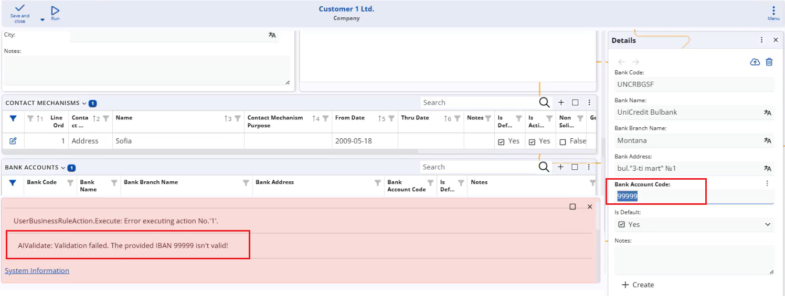

AI Business Rules
AI Business Rules allow ERP.net to call the configured AI model directly from User Business Rules.
Using natural-language prompts, you can delegate tasks that are difficult or expensive to express with classic formulas — such as generating meaningful short names for products, validating IBANs, or checking whether a party name “looks real” — and plug them into your existing business logic.
Three specialized AI action types are available:
- AISET – uses an AI prompt to set the value of an attribute (for example, automatically generating a
ShortNamefrom the full product name).

- AIVALIDATE – performs a blocking validation based on an AI prompt. If the AI does not return
"true", the rule throws an exception, and the operation is stopped (for example, rejecting a bank account when its IBAN is not validated).

- AIWARNING – performs a non-blocking validation based on an AI prompt. If the AI check fails, a warning is shown, but the user can still proceed, which is usually the preferred option for AI-based checks due to the probabilistic nature of AI results.

By combining these actions with standard events (such as ATTRIBUTECHANGED, CLIENTCOMMIT, or document state changes), you can enrich forms and processes with AI-powered automation and validation, while still keeping full control over when AI suggestions are advisory and when they are strictly enforced.